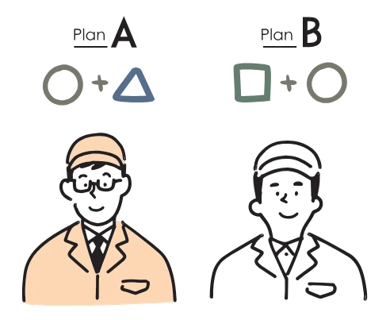
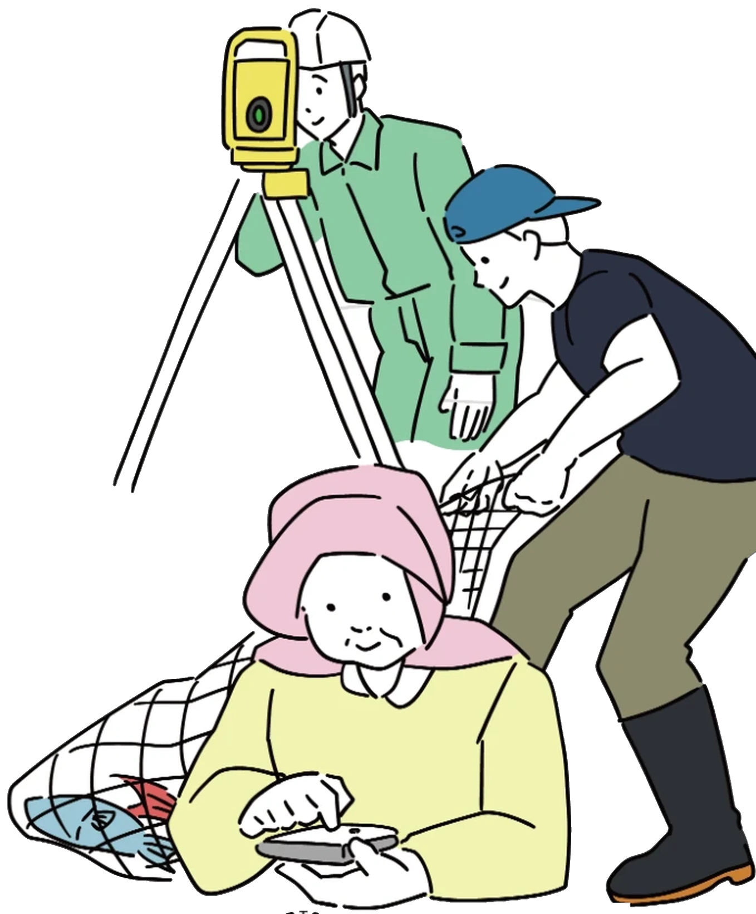
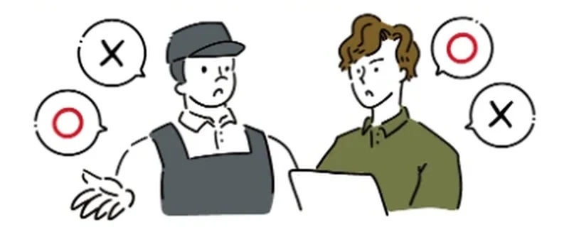
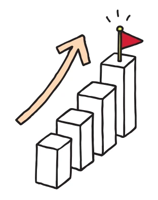
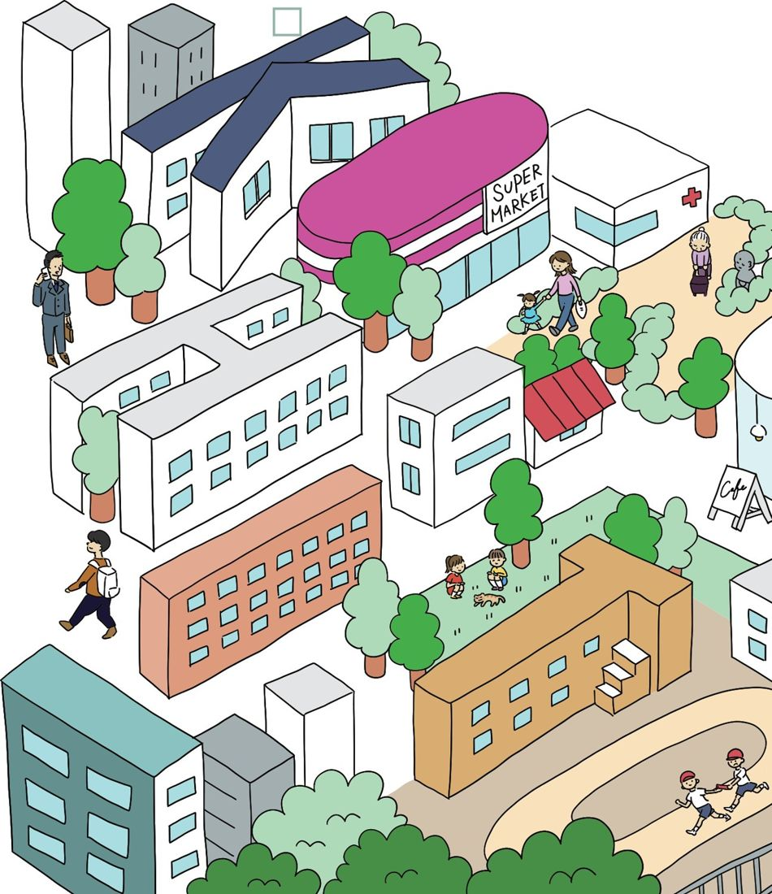
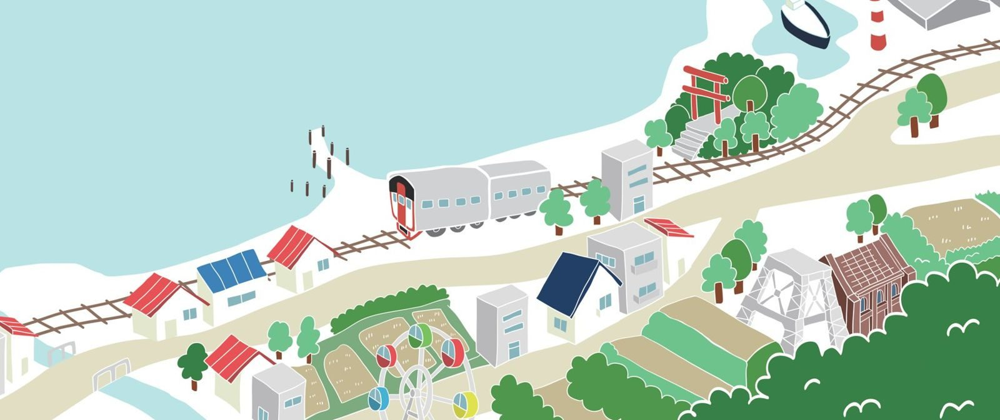

POINT01
完全オーダーメイド設計

業種・業務ごとの
本質的課題に応える仕組み
About
KONOHITOは、地域の中小企業を支えるデータ分析基盤の構築を専門とする事業です。散らばった記録や紙の書類をつなぎ、現場の実感を数字で確かめられるようにする。それが私たちの仕事です。
大きなシステムを一度に入れ替えるのではなく、現場の声を聞きながら、無理のない導入のかたちで小さな仕組みを重ねていく。地域の現場と同じ目線で歩む、身近な相談相手でありたいと考えています。
困ったとき、ふと顔が浮かぶ。「この人に頼みたい」。そう思ってもらえる存在でありたい、という願いを込めています。
建設・土木・農業漁業の
支援も行っております。

契約法人介護・水産など地域の事業所
ご相談何度でも無料です
Appeal Point
パンフレットでもご紹介している、KONOHITOの四つの特長です。

業種・業務ごとの
本質的課題に応える仕組み

実際の業務内容を確認しながら、
管理者・スタッフのストレスなく導入
開発から運用まで伴走し、
関係性を重視

予算感に合わせて
現実的な提案を実施

Our Service
整理されていないエクセルシートやデータ化されていない紙の書類を整理し、経営状況を可視化します。
毎日・毎週・毎月・毎年行う繰り返し作業を自動化し、業務を効率化します。
事業課題に応じたAIの様々な活用方法をご提案します。音声記録の自動化や帳票作成の効率化など、日々の業務に馴染む形で。
研究者としての分析経験を活かし、データに基づいた意思決定を支援します。
ホームページの制作も承っております。事業やお店の魅力が伝わる構成をご提案し、スマートフォンでの見やすさにも配慮して制作いたします。
Our Vision
都市部の汎用的な仕組みに頼るのではなく、地域の実情に根ざした知見や工夫を、地域の中で活かしていく。
わたしはこれまで、ITに不慣れとされる介護業界において、業務効率化や情報基盤の整備を、現場の声に寄り添いながら実装してきました。その中で感じたのは、多くの事業者がデジタル技術を拒んでいるのではなく、『信頼できる仕組み』と『無理のない導入のかたち』を求めているということです。
わたしは熊本県荒尾市で育ちました。これまで、地元をはじめとする地方の事業所が、数値管理や業務の見える化がうまくいかず、スケール化の糸口を見出せずにいる様子を多く目にしてきました。
加えて、2030年には日本全体でデジタル人材が約80万人不足すると言われており、特に地方では、そうした人材を継続的に確保・雇用することが容易ではありません。
“デジタルの地産地消”とは、そうした気持ちから生まれた言葉です。そしてわたしたちは、数値管理や業務の省力化を通じて捻出された時間が、人と人がふれあい、支え合うための時間へと変わることを、何よりの成果と考えています。
小さくても誠実で、持続可能な循環。
それが、わたしが目指す仕組みづくりのかたちです。

Our Way
わたしが仕事で大切にしている三つのことをご紹介します。納品して終わりにするのではなく、使い方をお伝えし、現場で実際にお使いいただけるところまでご一緒いたします。
わたしは、お客様の現在の業務の進め方に合わせて、仕組みをおつくりします。はじめに現場へ伺い、日々の業務の流れを拝見します。そのうえで、最も手間のかかっている業務ひとつから着手します。6〜8割ほど出来上がった段階で一度お使いいただき、ご意見を伺いながら仕上げてまいります。
一度の説明だけで使いこなせる方は、多くありません。わたしはこれまでの現場で、そのことを繰り返し経験してまいりました。そのため、準備の段階から少しずつご案内し、慣れていただくまで何度でもご説明いたします。年齢で得意・不得意を判断せず、お一人おひとりに伝わる説明を心がけています。
わたしは、現場の皆さまに日々お使いいただけるようになって、はじめて完成だと考えています。修正のご要望には、できるかぎり早く対応いたします。お困りでも言い出しにくい方がいらっしゃることを踏まえ、ご利用の状況を確認しながら、こちらからお声がけいたします。
効率化の本質は、
時間を取り戻すことにある。
樋口 周人
SHUTO HIGUCHI
KONOHITO 代表/博士(医学)熊本県荒尾市出身
Order
ご依頼の内容が固まっていない段階でも、ご相談いただけます。費用や情報の取り扱いについても、どうぞ遠慮なくお尋ねください。
大手の企業様よりも安価でのご提供を心がけております。はじめにご予算を伺い、その範囲で実現できる内容をご提案いたします。
これまで、医療・介護の個人情報を扱う仕組みを構築してまいりました。同じ水準の対策を、業種を問わず実施いたします。
医療・介護情報を扱う場合は、厚生労働省・経済産業省・総務省のガイドライン(3省2ガイドライン)に沿って設計いたします。
LINEまたはメールでご連絡ください。課題が整理できていない段階でも問題ございません。
現在の業務の流れと、お使いの表や書類を拝見します。
ご予算に合わせて、進め方・範囲・費用をご提示します。
まず一部をつくってお試しいただき、使い方をお伝えし、定着するまで伴走いたします。
問題ございません。「毎月の集計に時間がかかる」「紙とエクセルが混在している」といったお話から、課題の整理をお手伝いいたします。
ご安心ください。新しい画面を覚えるご負担ができるだけ少ない方法を選び、使い方は定着するまで繰り返しお伝えいたします。
その必要はございません。現在の運用を活かしたまま自動化するところから始められます。規模が大きくなり表での管理が難しくなった段階で、次の方法をご提案いたします。
内容により異なるため、要相談とさせていただいております。はじめにご予算を伺い、その範囲で実現できる内容をご提案いたしますので、まずはお気軽にお問い合わせください。